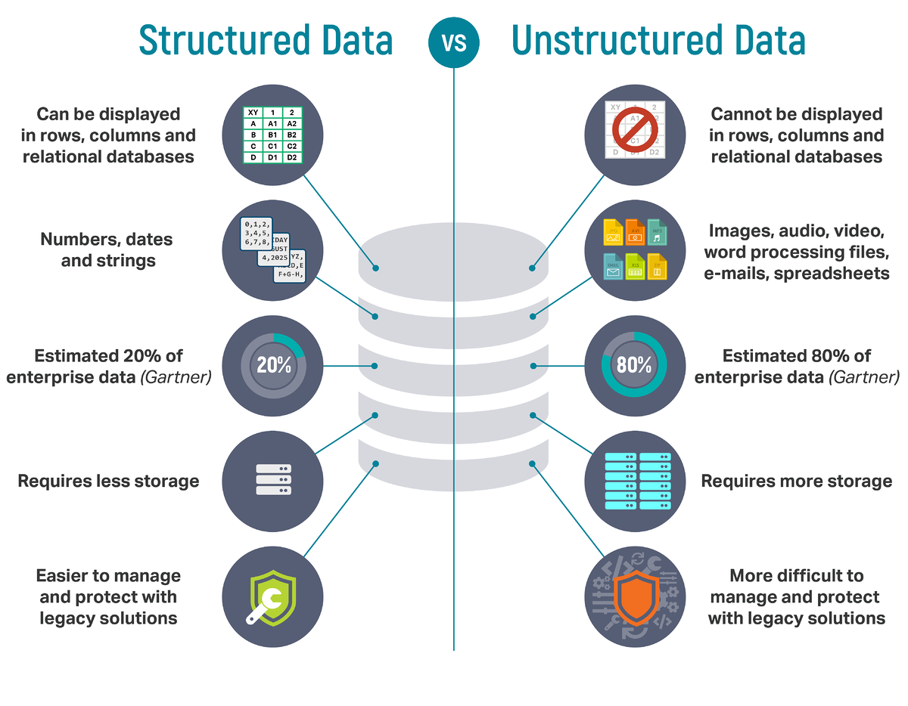

Introduction
Objectives
Concepts
- Data
- Structure continuum (unstructured, semi-structured and structured data)
- Big data
- Database
- Database Management System
Practical skills
- Excel
Learn
What is data?
The Merriam-Webster online dictionary provides three definitions of the word data:
factual information (such as measurements or statistics) used as a basis for reasoning, discussion, or calculation.
information in digital form that can be transmitted or processed
information output by a sensing device or organ that includes both useful and irrelevant or redundant information and must be processed to be meaningful— Merriam-Webster dictionary
Together, these definitions offer us a set of key elements from which we can build a broad understanding of the concept of data. The first key term is factual information or fact suggesting that data is something objective that, as the rest of the definition shows, is used for a given purpose such as discussing reasoning, or decision making.
The second definition is related to the use of the word data in a computational or communicational sense, where data is the “thing” that is being stored, transmitted, received, processed, etc.
While the first definition suggests that data is used by humans and machines for processes such as decisions and calculations, the third definition highlights that data does not only exist in nature but that it can also be created by humans and machines, either purpusefully or not.
Data management
Data managemers unlock the potential of data for a given purpose, individual, group or organization. It involves the development and implementation of a data strategy, and several processes such as data retrieval, processing, cleaning, storage and analysis. As we already pointed out, the value of data depends on the purpose that it serves and, thus, good data management involves a good understanding of both data and the needs of the organization, clients or users so that optimal data strategies can be developed and implemented.
Databases
According to the Merriam-Webster dictionary, a database is “a usually large collection of data organized especially for rapid search and retrieval (as by a computer)”. They keywords here is organized, which highlights that databases are both the products of and tools for data management.
Databases are usually created and managed for some purpose. This purpose may be very specific (e.g. keeping track of a store inventory) or broad (tracking socio-economic trends). Depending on the purpose that they serve, databases vary in size and complexity.
It may also be useful to consider here the difference between a database and a dataset, while they may have similar structure, size and complexity, datasets are usually tied to a specific work or body of work, and thus tend to have a more narrow and specific purpose than databases. A database can contain or be used to create multiple datasets, but a dataset would typically not contain multiple databases. Of course, this does not mean that datasets are always drawn from databases. Any time data is collected i For instance, a researcher create datasets from surveys and interviews all the time.
Database management systems (DBMS)
A Database Management System (DBMS) is software that provide functionalities that support the developtment, maintenance, security, and use of databases. You will often come accross the DBMS acronym with different suffixes attached to it such as RDBMS (Relational DBMS), OODBMS (Object Oriented DBMS), or ORDBMS (Object-Relational DBMS). Note that all these DBMS generally offfer the same basic functionalities. The difference is mainly the type and structure of the data contained in the databases.
Stuctured vs Unstructured data
source: (Lawtomated, 2019)
A data story
Philippe Mongeon
Chapter 1
Once upon a time a data was created by a random internet user and abandoned in a see of unstructured data.
Chapter 2
An algorithm passed by and decided to add xml tags to the text.
Chapter 3
A data manager stumbled upon the data, thought it would be relevant for the database users, and so she decided to add it to include it in her relational database.
The end.This is unstructured data. We humans who have read a book before can see the structure, but for a computer this is just text (or more basically, 1s and 0s).
One can give it a little a structured by applying XML tags
<title>A data story</title>
<author>Philippe Mongeon</author>
<h1>Chapter 1</h1>
<p>Once upon a time a data was created by a random internet user and abandoned in a see of unstructured data.</p>
<h1>Chapter 2</h1>
<p>An algorithm passed by and decided to add xml tags to the text.</p>
<h1>Chapter 3</h1>
<p>A data manager stumbled upon the data, thought it would be relevant for the database users, and so she decided to add it to include it in her relational database.</p>
<p>The end.</p>Another frenquently used semi-structured format is JSON, which in this case would look like this
{
title: "A data story",
author: "Philippe Mongeon",
[Chapter 1]: "Once upon a time a data was created by a random internet user and abandoned in a see of unstructured data.",
[Chapter 2]: "An algorithm passed by and decided to add xml tags to the text.",
[Chapter 3]: ["A data manager stumbled upon the data, thought it would be relevant for the database users, and so she decided to add it to include it in her relational database.",
"The end."]
}When
| title | author | section | text |
|---|---|---|---|
| A data story | Philippe Mongeon | Chapter 1 | Once upon a time a data was created by a random internet user and abandoned in a see of unstructured data. |
| A data story | Philippe Mongeon | Chapter 2 | An algorithm passed by and decided to add xml tags to the text. |
| A data story | Philippe Mongeon | Chapter 3 | A data manager stumbled upon the data, thought it would be relevant for the database users, and so she decided to add it to include it in her relational database. The end. |
Practice
Over the next few weeks of the course you will be designing your own relational database, importing data into it, and then writing queries to retrieve data from it. But since this course is intended to be accessible to students with little to know experience working with data, this week is dedicated to developing or polishing your Microsoft Excel skills.
While Excel has limited data management capabilities (that’s not what its designed for), it can still be considered as a very rudimentary form of DBMS. Also, since Excel is a flexible tool that you can use to quickly explore, manipulate and structure data before creating those structures and in a more rigid DBMS and then importing your data into it. Excel will also always remain relevant in your data management workflow because it remains one of the most accessible way to work with data for downstream processes (before data gets stored in a DMBS) and upstream processes (after the data was retrieved from the DBMS).
While Excel is undoubtedly useful and widely used, it has major limitations that make it a good tool for quick and dirty work but not ideal for more complex The case for scripted data analysis and against Excel
Excel file is a good starting point to get comfortable working with data before we start using a more complex RDBMS software.
Excel
Tasks
- Freeze the top row.
- Change the format of cell A1 to: bold, centered, and font size 12.
- Copy the format of A1 to the entire first row.
- Click A2 and use keyboard shortcuts to select the rest of the table.
- Add a thick outline at the top and bottom of the table.
- Slightly adjust column width to better fit content.
- Apply text-wrapping.
- Centre all text vertically.
- Add a beautiful fill color for the first row.
- Change the format of the first column to reveal the ISBN number
- Hide rows 5 to 10, then reveal them again.
- Hide columns 3 to 5, then reveal them again.
- Use the find/replace to remove “USD” from the “US List” column.
- Change the US List column format to “Currency” with 2 decimals.